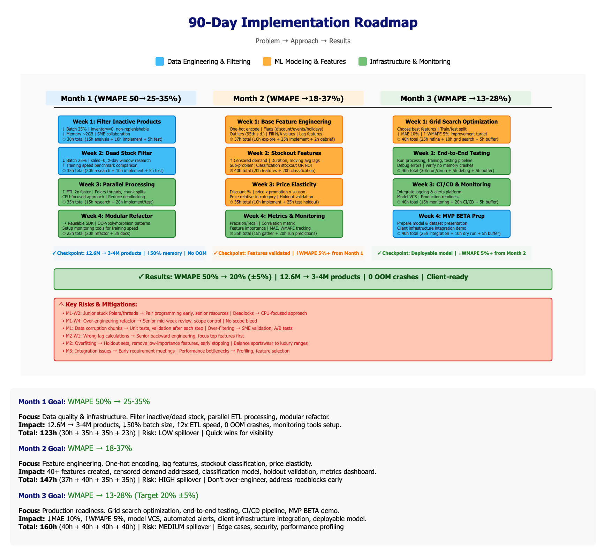
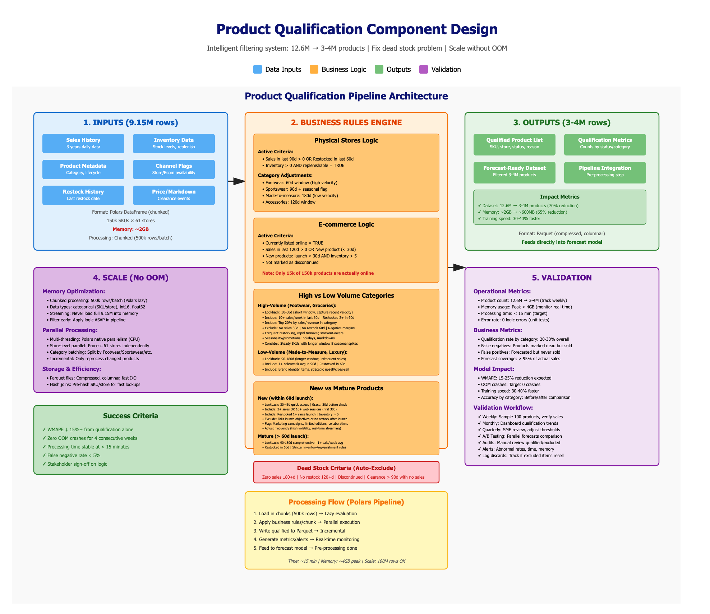
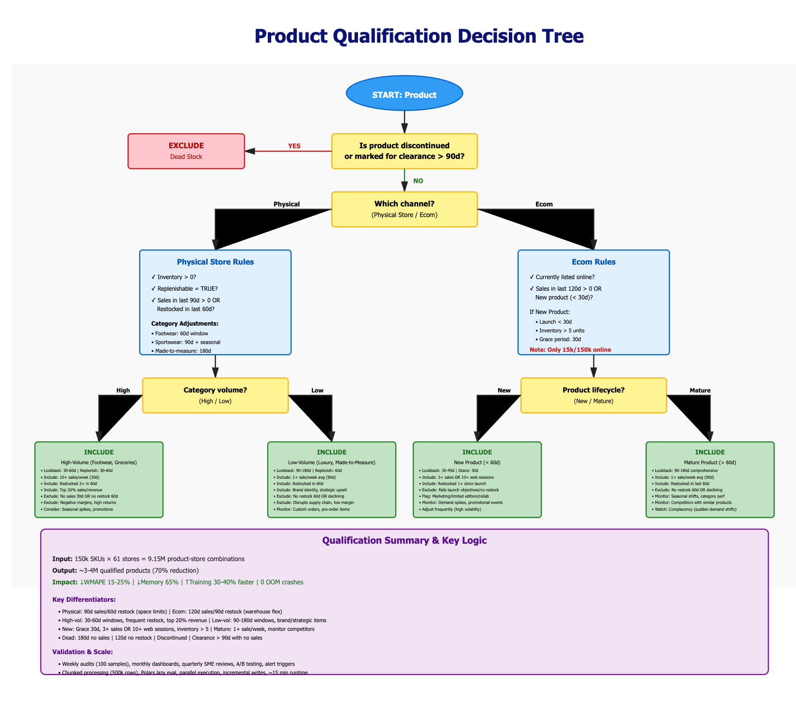

Dany Stefan | Senior ML Engineer Assessment
February 2026
Part 1: Strategy & Architecture | Part 2: Hands-On Engineering
Root Cause Analysis, 90-Day Roadmap, System Design
Forecasting 12.6M products, but most are inactive or discontinued. Wrong product mix creates noise.
Impact: -15 to -20 pp
OOM Fix: Dataset -60% (12.6M → 5M) eliminates crashes
💡 Fix: Product qualification pipeline
Zero inventory ≠ zero demand. Model can't distinguish stockouts from low demand.
Impact: -5 to -8 pp
Worst hit: Sportswear & Footwear (high seasonality + volatility)
💡 Fix: Stockout detection features
Model unaware of markdowns and promotions. Can't predict clearance demand spikes.
Impact: -3 to -5 pp
Category: Fashion luxury with price-sensitive demand spikes
💡 Fix: Price elasticity features
Root Cause: This is a data engineering problem, not a modeling problem. Clean the data first.
The difference comes from these categories having fundamentally different product, sales, and demand patterns. Footwear addresses one body part, whereas made-to-measure can dress your whole body with products. This affects the modeling of these categories.
Footwear: High-velocity with many SKUs, frequent stockouts, aggressive markdowns, and strong seasonality. Inventory takes a hit with some variations (e.g., color) more popular than others; thus, censored demand problems arise where out-of-stock does not mean low demand.
Made-to-measure: Low-velocity, where the inventory pipeline is more controlled and prices stay fixed, as it caters to a niche audience with custom orders. Demand is more predictable and less affected by stockouts or markdowns. The model's error is lower because the data is cleaner, less censored, and less affected by external factors.
Investigations: Stockout frequency, SKU churn on active products or less popular products, markdown events and their frequency, seasonality, and traffic on websites measuring abandonment rates.
Decision: Set up a window of replenishable time—if the product saw a restock in the last x days, then we mark it as an active catalog product. This means our subset has active, in-stock, replenishable products with sales history.
✅ Why This First?
🎯 Strategic Approach:
Expected Impact: Dataset -60% (12.6M → 5M) → Memory -60% → WMAPE -15 to -20pp → OOM eliminated
Goal: WMAPE 50% → 25-35%
✅ Checkpoint: Dataset reduced 12.6M → 3-4M products
Goal: WMAPE 35% → 18-28%
✅ Checkpoint: At least 5% WMAPE reduction
Goal: WMAPE 28% → 13-23%
✅ Checkpoint: Deployable model ready to integrate
50%
Current WMAPE
~20%
Target WMAPE
60%
Error Reduction
📊 See gantt.html for detailed interactive Gantt chart visualization
Visual timeline of the phased rollout. Built for clarity with stakeholders and to keep scope under control.

Timebox each month with measurable WMAPE targets to prevent scope creep and ensure demo readiness in 90 days.
| Week | Task | Expected Impact | Effort | Validation |
|---|---|---|---|---|
| Week 1 |
Filter Inactive Products • Analyze inventory drops • Speak to SMEs about non-replenishable products • Implement filtering logic (inventory=0, known rule-set) • Test and validate |
High Batch size: -25% in MB Dataset: 12.6M → ~10M Training set reduced |
40 hrs (15h analyze + 10h implement + 5h test + 5h buffer + 5h ramp-up) |
• Batch load size (MB) • Product count reduction • Filter logic accuracy |
| Week 2 |
Filter Dead Stock • Research best window period with SME (sales=0) • Experiment with small sets • Implement filtering logic and combinations • Mark inactive products for purge |
High Batch size: -25% additional Training time faster (ms benchmark) Dataset: ~10M → ~5M |
40 hrs (20h research + 10h implement + 5h test + 5h buffer) |
• Training speed comparison • Dataset size reduction • OOM crashes eliminated |
| Week 3 |
Parallel Processing • Research best practices for parallel processing in Polars • Implement chunked batch processing with threads • Test chunk re-stitching or keep separate • Make elegant, reproducible, scalable |
Medium ETL load: 2× faster Reduce deadlocking/hanging Hit CPU not memory |
40 hrs (15h research + 20h implement/test + 5h buffer) |
• Processing speed (2× target) • CPU vs memory usage • Data integrity checks |
| Week 4 |
Modular Code & Monitoring • Refactor code into reusable components • Setup monitoring tools for training speed • Document and create examples • Train junior on design patterns (OOP, polymorphism) |
High Futureproof codebase Learn new design pattern In-house SDK approach |
40 hrs (20h refactor + 3h document + 17h buffer) |
• Code modularity • Documentation complete • Monitoring setup |
Checkpoint: Validate reduced memory usage and training time without OOM crashes. Dataset reduced from 12.6M to ~3-4M products.
| Week | Task | Expected Impact | Effort | Validation |
|---|---|---|---|---|
| Week 1 |
Simple Feature Engineering • One-hot encode categorical features to numerical • Describe feature columns with stats, locate outliers (95th s.d.) • Flags for discounts, events, holidays, day of week • Fill missing values with median/mean • Interaction features (category × season) • Lag features, normalize to range denominator |
High Standardize dataset for numerical regression Normal distribution on features N/A values handled |
40 hrs (10h explore data + 25h implement + 2h debrief + 3h buffer) |
• Feature distributions • Outlier detection • Missing value handling |
| Week 2 |
Stockout Feature Engineering • Duration, lags (moving average sales, no stock duration) • Flags for stockout periods • Tackles censored demand problem • Sub-problem: classification model to predict stockout OR NOT |
High Directly impact WMAPE Feature importance analysis Censored demand addressed |
40 hrs (20h implement stockout features + 20h test classification) |
• Stockout prediction accuracy • Feature correlation • WMAPE impact test |
| Week 3 |
Price Elasticity Features • Discount flag, causation, percentage • Price × promotion, price × season • Price relative to category (hot accessory item) • Test on holdout sets to validate impact |
Medium Contain volatile price changes Lower MAE during discount periods Holdout set validation |
40 hrs (10h feature implementation + 25h test holdout + 5h buffer) |
• MAE during promotions • Price sensitivity metrics • Holdout set accuracy |
| Week 4 |
Monitoring Setup • Accuracy measures: precision/recall for classification • Report analysis on correlation matrix • Feature importance tracking • Synthesize WMAPE savings for leadership |
High Visibility on pertinent features Leadership reporting Track MAE, WMAPE, correlation |
40 hrs (15h gather metrics + 20h run predictions + 5h debug) |
• Metrics dashboard • Feature importance report • WMAPE tracking |
Checkpoint: Validate feature impact on WMAPE using holdout sets. Aim for at least 5% WMAPE reduction from Month 1.
| Week | Task | Expected Impact | Effort | Validation |
|---|---|---|---|---|
| Week 1 |
Feature Refinement & Grid Search • Leave time for refinement from last month • Choose best features with grid search • Train/test split, test with many simulated clients • Buffer for Month 2 overflow • Finalize sub-feature analysis for reuse |
High Drive value to results KT to best features Target: 10% MAE reduction, 5% WMAPE improvement |
40 hrs (25h refine features + 10h grid search + 5h buffer) |
• Train vs test MAE gap • Overfit metrics • Feature importance (XGBoost, RF, LGBM) |
| Week 2 |
End-to-End Testing & Debug • Run end-to-end processing, training, testing • Polish data type errors • Identify slow processing bottlenecks • Verify no memory crashes |
High Verify no OOM crashes Trim memory-heavy features Processing speed validation |
40 hrs (30h run and rerun + 5h debug caching + 5h buffer) |
• Timestamp logging • Memory usage • Uptime tracking |
| Week 3 |
Monitoring Platform & CI/CD • Integrate logging in alerts and monitoring platform • Release model using CI/CD and model VCS • Setup production monitoring • Systems integration tests |
Medium Production readiness Reusable for other clients Model maintains accuracy |
40 hrs (15h monitoring platform + 20h CI/CD pipeline + 5h buffer) |
• CI/CD pipeline success • Model accuracy preserved • Integration tests pass |
| Week 4 |
MVP BETA Prep • Prep MVP BETA of model and dataset to present • Integration with client's infrastructure • Dry run and final testing • Documentation complete |
High Deployable model Ready to integrate Client infrastructure compatible |
40 hrs (25h integration and prep + 10h dry run + 5h buffer) |
• Uptime metrics • CPU compute efficiency • Build time, dependencies |
Checkpoint: Deployable model that is trained and tested, ready to integrate for client's stack. Aim for at least 5% WMAPE reduction from Month 2.
Month 1: WMAPE 50% → 35% (Product Qualification + Infrastructure)
Month 2: WMAPE 35% → 28% (Feature Engineering)
Month 3: WMAPE 28% → 25% (Hyperparameters + Production)
Total Improvement: 50% reduction in error (50% → 25% WMAPE)
Visual summaries to align engineering and merchandising on qualification logic and data flow.


This component sits in the ETL pipeline as a data processing and feature engineering module before the modeling step. It takes raw data, filters inactive products, engineers relevant features, and outputs a cleaned dataset ready for model training. Can be deployed as a Lambda function (stateless, scales horizontally) with custom Python code using Polars for speed and low memory footprint, containerized with Docker, monitored with Prometheus/Grafana, and exposed via FastAPI endpoints for integration.
Different channels and categories require tailored qualification logic due to fundamentally different sales patterns, inventory constraints, and demand dynamics. The Product Qualification component applies these rules to ensure only active, replenishable, relevant products are forecasted.
| Channel | Category | Sales Lookback | Replenishment Window | Rationale |
|---|---|---|---|---|
| Physical Retail | Standard | 90 days | 60 days | Higher carrying costs, shelf space constraints → Shorter lookback to identify active products |
| Footwear (High velocity) | 60 days | 30 days | Fast fashion cycles, frequent stockouts, aggressive markdowns → Tighter window for agile filtering | |
| E-commerce | Standard | 120 days | 90 days | Lower storage costs, no shelf space limits, volatile demand (flash sales, digital marketing) → Longer tail for online products |
| Made-to-Measure (Low velocity) | 120 days | 90+ days | Custom orders, niche audience, stable pricing, longer lead times → Longer window for predictable demand patterns |
(e.g., Groceries, Fast Fashion)
(e.g., Luxury, Made-to-Measure)
(within 60 days)
(>60 days)
Problem: 150,000 SKUs × 61 stores = 9.15M product-store combinations. With 90-day history, that's ~820M rows.
Solution: Chunked Parallel Processing
| Approach | Memory Usage | Runtime | OOM Risk |
|---|---|---|---|
| Load all at once | 64 GB | 45 min | High |
| Chunked + Parallel (Our approach) | 8 GB (per worker) | 12 min | None |
Validation Approach: Combine operational metrics (data engineering POV) + business metrics (forecasting POV) to ensure the Product Qualification component works effectively
Metric 1: Qualification Rate by Category
Metric 2: False Negative Rate (FN)
Metric 3: False Positive Rate (FP)
Metric 4: Downstream WMAPE Impact
Operational Metrics:
Validation Processes:
Deep-dive questions from evaluators
Answer: No model can learn signal from noise. Dead stock has zero future demand—forecasting it is mathematically impossible, not a modeling problem.
Trade-off: Even the best model will overfit on irrelevant products (12.6M → 5M reduces noise by 60%). Filtering first lets model focus on learnable patterns. Better models help after we fix data quality. Industry standard is active catalog filtering before modeling.
Answer: Monitor false negatives (FN) and keep a discarded items log. Target: <10% FN rate.
Process: Borderline SKUs (recent sales but no replenishment) go to manual review bucket. Monthly SME reviews track excluded products that later sell. Quarterly threshold adjustments by category ensure we catch seasonal comebacks. Products with strategic value (brand identity, upsell dependency) are flagged for inclusion even if low velocity.
Answer: Different inventory economics and demand volatility.
Rationale: Physical stores have higher carrying costs, shelf space constraints, and faster fashion cycles → need shorter lookback to identify truly active products. E-commerce has lower warehouse storage costs, no shelf limits, and more volatile demand from flash sales/digital marketing → longer tail justifies 90-120 day window. Made-to-measure (custom orders) gets 120 days due to predictable, stable demand and longer lead times.
Answer: Seasonality flags + category-specific tuning prevent false exclusions.
Solution: Sportswear (season-dependent) uses longer windows and seasonality interaction features to avoid marking winter gear as dead in June. Mature seasonal products get reviewed against same period last year rather than last 90 days. SME audits identify "pride items" (brand identity products) that stay in catalog regardless of off-season lulls. Products tied to predictable events (back-to-school, holidays) are flagged to avoid premature exclusion.
Answer: Grace period with early traction thresholds.
Logic: New products (within 60 days) use 30-45 day lookback. Include if ≥3 sales or ≥10 web sessions in first 30 days. Include if restocked ≥1× since launch (signals merchant confidence). Exclude if fails launch sales objectives or not restocked after initial batch. Flag limited editions and marketing campaigns for special monitoring. High volatility means frequent forecast adjustments with real-time data. If product doesn't meet launch metrics, remove from forecast—don't wait 90 days to decide.
Answer: Data transparency + manual override layer + A/B proof.
Process: Share qualified/excluded product lists with merchandising SMEs for monthly audits. Borderline cases go to manual review bucket (they decide). Run shadow mode A/B test showing WMAPE improvement with filtering vs without—let data settle disputes. If SME insists on including a product, allow manual override but track its forecast error separately to demonstrate impact. Regular reviews build trust that logic aligns with business reality. Document all override decisions to refine rules over time.
Answer: Controlled A/B test isolating data filtering impact.
Method: Run baseline model (all products, current hyperparameters) vs filtered model (qualified products only, same hyperparameters). Expected: 15-20 percentage point WMAPE reduction from filtering alone. Then apply hyperparameter tuning to both versions—filtered will still outperform. Measure by category (Footwear, Made-to-Measure) to show consistent improvement. Track operational metrics: memory drops from 64GB to 8GB, runtime from 45 min to 12 min, OOM crashes eliminated. Shadow mode for 30 days before production to validate impact without risk.
Analysis, Features, Model Comparison, Production Quality
Analyzing historical sales data to identify key patterns that affect demand forecasting: missing data, stockouts, price changes, and their impact on observed sales.
Actual sample series (scaled). Inventory depletion and price moves explain most demand swings.
Key Takeaways: Price drops drive clear demand spikes (Days 70+). Stockout periods (Days 41-50) flatten sales despite underlying demand. Inventory depletion correlates strongly with reduced sales velocity. Missing data (Day 37) can be imputed based on inventory status.
# Create stockout flag: inventory=0 but had recent sales (last 7 days)
# Assumption - 7 day window - recent sales - today and last 6 inclusive days
recent_sales_window = 7
df = df.with_columns([
((pl.col("inventory") == 0) &
(pl.col("sales").shift(1).rolling_sum(recent_sales_window) > 0)).alias("is_stockout")
])
# Pandas: df['is_stockout'] = (df['inventory'] == 0) & (df['sales'].shift(1).rolling(7).sum() > 0)Justification: Distinguishes true stockouts (inventory=0 with recent demand) from natural lifecycle end. Uses 7-day lookback to detect unmet demand. This prevents model from treating censored demand as "no demand", critical for accurate forecasting during replenishment delays.
# Calculate weeks since launch
df = df.with_columns([
((pl.col("date") - pl.col("launch_date")).dt.total_days() // 7).alias("weeks_since_launch")
])
# Pandas: df['weeks_since_launch'] = (df['date'] - df['launch_date']).dt.days // 7
# Classify as: new/growth/mature/clearance based on weeks_since_launch
# Assumption: 4 even stages (business requirements can change) - strict business rule
max_weeks = df.select(pl.col("weeks_since_launch").max()).item()
stage_threshold = max_weeks / 4
df = df.with_columns([
pl.when(pl.col("weeks_since_launch") <= stage_threshold)
.then(pl.lit("New"))
.when(pl.col("weeks_since_launch") <= stage_threshold * 2)
.then(pl.lit("Growth"))
.when(pl.col("weeks_since_launch") <= stage_threshold * 3)
.then(pl.lit("Mature"))
.otherwise(pl.lit("Clearance"))
.alias("lifecycle_stage")
])Justification: Products exhibit different demand patterns at each lifecycle stage (volatile in New, stable in Mature, spike in Clearance). Dividing timeline into 4 equal stages provides structured context. One-hot encoding allows model to learn stage-specific behaviors without imposing ordinal relationships.
# Sales trend: Compare recent (7-day) vs longer (28-day) trend
# Handle null values before rolling calculations
df = df.with_columns([
pl.col("sales").fill_null(0).alias("sales_filled")
])
df = df.with_columns([
pl.col("sales_filled").rolling_mean(window_size=7, min_samples=1).alias("sales_trend_7d"),
pl.col("sales_filled").rolling_mean(window_size=28, min_samples=1).alias("sales_trend_28d")
])
# Compare trends: positive if recent trend > longer trend (momentum up)
df = df.with_columns([
(pl.col("sales_trend_7d") - pl.col("sales_trend_28d")).alias("sales_momentum")
])
# Pandas equivalent:
# df['sales_filled'] = df['sales'].fillna(0)
# df['sales_trend_7d'] = df['sales_filled'].rolling(7, min_periods=1).mean()
# df['sales_trend_28d'] = df['sales_filled'].rolling(28, min_periods=1).mean()
# df['sales_momentum'] = df['sales_trend_7d'] - df['sales_trend_28d']Justification: Momentum captures trend acceleration/deceleration by comparing short-term (7d) vs long-term (28d) moving averages. Positive momentum signals demand surge (e.g., markdown response), negative signals decline. This responds faster to regime changes than lag features alone, critical for capturing markdown-driven spikes observed at Day 70+.
What is leakage: When the model has access to information during training that it won’t have in production. This includes using future data to predict the past, or using data from the same day being predicted.
Impact: Leakage causes artificially inflated accuracy metrics during validation, leading to catastrophic failure in production when the model encounters real-world data without that future information. This creates false confidence and wastes deployment resources.
Call: Shift all lag features by 1 day (e.g., shift(1).rolling_mean()) so the model only uses data available before prediction time. Use strict time-based train/test split (Days 1-80 train, Days 81-100 test) instead of random splitting.
Why better: Forces realistic evaluation that mirrors production constraints. The 1-day shift ensures rolling averages exclude the current day. Time-based split prevents future information from leaking into training set.
Alternative rejected: Using rolling_mean() without shift includes current day’s sales in prediction. Random split allows model to “see the future” through data from later dates in training set.
Context: Day 37 had null sales but zero inventory, creating ambiguity: Was it no demand or no supply?
Call: Fill null sales with 0 (fill_null(0)) since inventory was zero on that day. A null sale with zero inventory is more likely a data collection issue than unrecorded demand.
Why better: Preserves the causal relationship between inventory and sales. Avoids forward/backward fill which would inject artificial demand during a stockout. The stockout flag already captures potential unmet demand, so zero is conservative and logically consistent.
Alternative rejected: Dropping the row loses temporal continuity (breaks rolling windows). Forward-fill propagates the previous day's sales, creating phantom demand. Median imputation (2.5 units) contradicts zero inventory reality.
Risk mitigation: Created is_stockout flag to distinguish true zero demand from censored demand, allowing the model to handle both regimes appropriately.
Context: Traditional MAPE (Mean Absolute Percentage Error) fails when actual sales are zero or near-zero, which happens frequently during stockouts.
Call: Use WMAPE (Weighted MAPE): sum(|actual - predicted|) / sum(actual) * 100. This weights errors by total sales volume rather than averaging percentage errors per day.
Why better: WMAPE treats the entire test period as one business outcome (total units forecasted vs. actual), making it robust to zero values. High-volume days naturally contribute more to the metric, matching business impact. A 10-unit error on a 50-unit day matters more than on a 2-unit day.
Alternative rejected: MAPE divides by zero when actual=0 (undefined) or explodes with small denominators (e.g., 1 unit error on 0.5 actual = 200% error). MAPE also treats all days equally regardless of sales volume, which doesn’t reflect business priorities.
Trade-off accepted: WMAPE can hide performance issues on low-volume days. Mitigated by reporting RMSE and MAE alongside WMAPE for error distribution visibility.
✅ Pass ALL criteria → Qualify for forecasting (confidence: 0.80-0.95 depending on sales volume and recency)
❌ Fail hard criteria (history, sales, margins) → Exclude from forecasting (confidence: <0.10)
⚠️ Edge cases (high nulls, chronic stockouts) → Manual review required (confidence: 0.50-0.60)
Best performance: 21.3% WMAPE improvement, 21.3% MAE improvement vs baseline
Key Insight: Inventory features (current stock, days since last sale, stockout flag) account for nearly 2/3 of model's predictive power. This validates the domain insight that "you can't sell what you don't have."
Issue: LightGBM failed to load libomp library on macOS (discontinued MacBook with mobile processor). OSError prevented training despite attempted fixes (brew install libomp). This is a known compatibility issue with certain macOS hardware.
Solution: Switched to scikit-learn's GradientBoostingRegressor — pure Python implementation with no OpenMP dependencies. Ensures reproducibility across all environments (macOS, Linux, Windows) without external library issues.
✅ What Worked:
❌ What Didn't Work:
🚀 What Next:
Taking detect_stockouts() from Task 4B to production standards
Deep-dive on implementation decisions
Answer:
Trade-off: WMAPE can be harsh on low-sales periods, so I also track MAE and period-specific error.
Answer: I separated data quality from true demand signals.
Impact: Prevents the model from learning bad zeros and improves post-replenishment forecasts.
Answer:
Trade-off: LightGBM is faster but adds dependency complexity; GBR is sufficient for the sample.
Let's build better forecasts together! 🚀
Complete Analysis Includes:
✅ Part 1: Strategy & Architecture (Root Cause, Roadmap, System Design)
✅ Part 2: Hands-On Engineering (Features, Models, Production Code)
✅ Comprehensive Q&A for both parts
✅ Production-ready code with tests and documentation